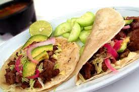

Carnitas Tacos

This recipe created by the people of Mexico is a delicious
and hearty meal for picnics or parties. THey are one of a kind
Ingredients
- 5 pounds of pork shoulder
- 6 oz of seasoning
- 1 bag of white corn tortillas
- 1 bush of cilantro
- 2 limes
Steps
- boil the pork shoulder for 3 hours on low
- Once boiled put the shoulders to fry in a pot of oil
- once finished top off with seasoning
- put the tortillas to cook on a skillet
- shred the pork on the tortillas
- Top the tacos off with cilantro and line